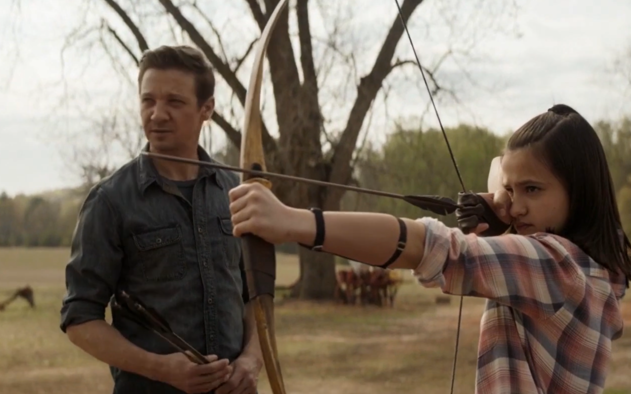

-
La familia de Ojo de Halcón desaparece en el viento
Damos inicio a nuestra lista con la escena de apertura desgarradora de la película donde la familia de Ojo de Halcón se convierte
en polvo en el viento. Después de ausentarse en Infinity War, los fanáticos exigieron saber dónde estaba el principal arquero de Marvel, y pudimos
ver un breve momento de él felizmente haciendo un picnic con su familia antes de que el efecto del Chasquido los borrara de la existencia. Esta fue
una manera sombría de comenzar la película, pero hizo su trabajo al establecer los riesgos humanos y emocionales de la cinta de una manera desgarradora.
-
Ironman

- Sarcastico
- Intelectual
- Valiente
Caracterisitcas
-
Hulk

- Fuerza
- Tenazidad
- Autocontrol
Caracterisitcas
-
Thor

- Resiliente
- Feroz
- Electrizante
Caracterisitcas
-
Capitán América

- Lider
- Atletico
- Tactico
Caracterisitcas